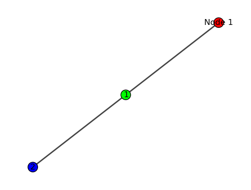

igraph¶
Quick Guide for igraph¶
Code by : Abolfazl Ziaeemehr

First, ensure that python-igraph is installed. You can install it using pip:
[2]:
try:
import igraph
print(igraph.__version__)
except ImportError:
print("igraph is not installed.")
# If `igraph` is not installed, you can install it using the following command (uncomment the following line):
# !pip install python-igraph
0.11.6
Creating Graphs¶
Empty Graph
To create an empty graph:
[2]:
import igraph as ig
g = ig.Graph()
Graph with Nodes and Edges¶
To create a graph with 10 nodes and specific edges, also get summary of the graph with print(g):
[3]:
g = ig.Graph(n=10, edges=[[0, 1], [0, 5]])
print(g)
IGRAPH U--- 10 2 --
+ edges:
0--1 0--5
This will display the number of vertices and edges, and list the edges if the graph is small.
Assigning Attributes¶
You can set and retrieve attributes for graphs, vertices, and edges.
[4]:
import igraph as ig
# Create a graph with 3 nodes
g = ig.Graph(n=3)
# Assign a 'color' attribute to all nodes
g.vs["color"] = ["red", "green", "blue"]
# Assign a 'label' attribute to the first node
g.vs[0]["label"] = "Node 1"
# Assign a 'label' attribute to the second node
g.vs[1]["label"] = "Node 2"
[5]:
# Create a graph with edges
g.add_edges([(0, 1), (1, 2)])
# Assign a 'weight' attribute to all edges
g.es["weight"] = [1.5, 2.5]
Retrieving Attributes¶
[6]:
# Get all attributes for the first node
node_attributes = g.vs[0].attributes()
print(node_attributes)
{'color': 'red', 'label': 'Node 1'}
[7]:
# Get the 'color' attribute for all nodes
colors = g.vs["color"]
print(colors)
['red', 'green', 'blue']
[8]:
# Get all attributes for the first edge
edge_attributes = g.es[0].attributes()
print(edge_attributes)
{'weight': 1.5}
[9]:
# Get the 'weight' attribute for all edges
weights = g.es["weight"]
print(weights)
[1.5, 2.5]
Load graph from adjacency list¶
[10]:
import os
from netsci.utils import list_sample_graphs
from netsci.utils import get_sample_dataset_path
from netsci.utils import download_sample_dataset
def load_edges(filepath):
edges = []
with open(filepath, 'r') as file:
for line in file:
if line.startswith('#'):
continue # Skip comments
A, B = map(int, line.split())
edges.append((A, B))
return edges
def load_graphi(filepath:str, directed:bool=False):
edges = load_edges(filepath)
G = ig.Graph(edges=edges, directed=directed)
return G
path = get_sample_dataset_path()
# make sure you have downloaded the sample dataset
download_sample_dataset()
file_name = os.path.join(path, "collaboration.edgelist.txt")
print(f"{path=}")
G = load_graphi(file_name, directed=False)
print(f"{'Number of vertices:':<30s} {G.vcount():20d}")
print(f"{'Number of edges:':<30s} {G.ecount():20d}")
print(f"{'Is directed:':<30s} {str(G.is_directed()):>20s}")
print(f"{'Density:':<30s} {G.density():20.6f}")
print(f"{'Average clustering coefficient:':30s}{G.transitivity_undirected():20.6f}")
File /Users/tng/git/workshops/netsci/netsci/datasets/networks.zip already exists.
path='/Users/tng/git/workshops/netsci/netsci/datasets/'
Number of vertices: 23133
Number of edges: 93439
Is directed: False
Density: 0.000349
Average clustering coefficient: 0.264317
Visualizing Graphs¶
[11]:
# need to install matplotlib and pycairo
# !pip install pycairo -q
[12]:
import matplotlib.pyplot as plt
fig, ax = plt.subplots()
# Compute a layout
layout = g.layout("kk") # Kamada-Kawai layout
# Define visual style
visual_style = {}
visual_style["vertex_size"] = 20
visual_style["vertex_label"] = range(g.vcount())
visual_style["layout"] = layout
visual_style["bbox"] = (300, 300) # Bounding box size
visual_style["margin"] = 20
# Plot the graph
ig.plot(g, **visual_style)
# Plot the graph in the axes
ig.plot(g, target=ax, **visual_style)
plt.show()

[ ]: